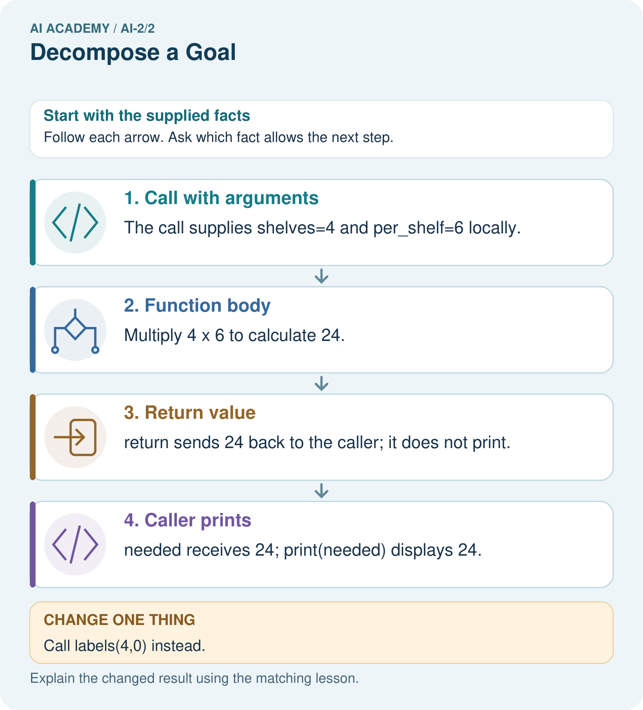

AI Academy · Level 2 · Grade 7 · Week 2 · Teacher guide
Decompose a Goal
Learn to understand, design, build, test and explain AI systems responsibly.
Project: Transparent Book Recommender
Teacher guide · 1 of 7
Decompose a Goal
Teach the learning cycle
Primary target: Distinguish a function definition from a function call
| Session | Sequence and minutes | Resources |
|---|---|---|
| Session 1 · Understand · 45 min | 0–7: recall and prerequisite; 7–15: inspect the concrete case and predict; 15–30: teacher models the worked trace; 30–40: learners explain a step using the text and visual; 40–45: check the core idea. | Sections 1–6; record the brief recall in the workbook. |
| Session 2 · Practise · 45 min | 0–5: retrieve the procedure; 5–15: W2 completion practice; 15–23: explain and check with a partner; 23–30: each learner answers the misconception check; 30–40: targeted reteaching or a harder variation; 40–45: prepare the investigation. | Sections 7–10; use the matching workbook W2 and misconception check. |
| Session 3 · Investigate and transfer · 45 min | 0–5: retrieve the decision rule; 5–20: investigate or trace; 20–30: start the independent case; 30–38: connect the project; 38–43: act on feedback; 43–45: plan the return check. | Sections 9 and 11–14. Give extra time to finish the full task set; use Section 15 when the week includes a coding lab. |
This is a starting allocation of 135 minutes, not a validated duration. Preserve all named topics. Schedule extra time for connected examples, the full investigation, independent cases and project building. Repeated copies of a case share one recorded attempt; they are not new evidence.
Case exposure check: this source example appears in ai-2/2, python-bridge/8. Reuse a familiar case for recall or modelling; verify that the case used to assess transfer has not already received feedback.
Retrieval answer guidance
Precision in Algorithms
Without opening the old lesson, explain one key idea from Precision in Algorithms. Give an example and a mistake that the idea helps you avoid.
Look for: Translate a short paper calculation into a Python script
Reference example, not the only acceptable wording: packs = 4; per_pack = 6; total = packs * per_pack; print(total), each on its own line. The first two bind quantities, the third computes 24 and the fourth displays 24. Assignment alone produces no displayed output in this script.
Use the student module and workbook section with this exact week title. The worked case, independent question and answers below form one aligned lesson sequence.
What the learner must demonstrate
Decompose a recommender for books under 120 pages in a requested genre. A teammate scores every book before checking the page limit. Explain a clearer order and the record passed between stages.
Concept to explain
Complex tasks become manageable when divided into testable subproblems.
| Term | Meaning |
|---|---|
| decompose | Break a goal into smaller parts with clear responsibilities and connections. |
| subproblem | A smaller part of a larger problem with its own inputs and intended result. |
| dependency | Something a step needs from another step before it can proceed correctly. |
| interface | An agreed boundary specifying how two parts exchange information or actions. |
Prepare the class
Use the supplied scenario, student illustrations and blank paper. For numeric work, offer counters or a calculator after learners show the setup. Fictional records are supplied; personal data and paid accounts are unnecessary.
Allow 80 minutes: recall 8; explanation 12; worked demonstration 15; guided practice 20; independent assessment 15; project and reflection 10. Extend the lab into a second session when needed.
Preparation for the connected explanation
Teach definition, call, parameter and positional argument as distinct ideas. Keep inputs scalar and avoid mutable-list aliasing in this first function lesson. Reference: https://docs.python.org/3/tutorial/controlflow.html#defining-functions. These functions print results; reusable return values and local state are taught in Week 9.
Readiness answer
8. Subtraction is ordered: reversing these values would produce -8.
Python 3 editor and functions.py
Parameter cards labelled capacity and used
Call cards and a table for expected and observed output
End goal for the pictorial case
By the end, I can decompose a calculation into a function with explicit arguments and a returned result.
This added worked case illustrates the week’s main idea. Retain all original and connected topics; schedule its practice within the teaching cycle.
Teacher guide · 2 of 7
Explain the mechanism
Explain the mechanism
Input → Process → Output
Trace the information. At each stage, ask what changed and how you could test it.
Which stage could fail even when the other two are correct? Explain:
Predict first. Then check each step. A correct answer without visible reasoning is incomplete evidence.
1. Goal: help a learner leave home ready.
2. Parts: check time; check weather; check bag; choose reminder.
3. Dependency: weather must be known before the clothing suggestion.
4. Test each part separately, then test the whole flow.
Recalculate, retrace, or restate the reasoning in your own representation:
CHECK Did the evidence answer the exact question? Did the total, path, or source record stay consistent?
Concrete teaching case
A class wants to recommend one of five library books.
Decompose the goal into checkable steps.
Exact explanation to model
Collect preferences, record book traits, score each with a declared rule, handle ties and explain the suggestion. Each step produces an inspectable record.
Explain the added worked example
A fictional supply cupboard records capacity and the number of occupied spaces. The remaining-space calculation is capacity minus used. Instead of copying the same instructions for every cupboard, define one function and call it with different values. A function makes a procedure reusable; its name alone does not guarantee that its instructions are correct.
Our input contract requires nonnegative integer counts with used no greater than capacity. The example assumes these conditions; it does not validate them. This week the function prints its result. Week 9 will show how to return a value for later calculations.
def introduces the definition. The function name is followed by parameter names in parentheses and a colon. Four-space indentation marks the body. Executing the definition creates the function but does not run its body. The two unindented calls then run it, producing 8 and 3 on separate lines. A blank line helps readability; indentation determines the block.
Key terms
| Term | Meaning |
|---|---|
| Function | A named block of reusable instructions that runs when called |
| Definition | Code that creates a function and specifies its body |
| Call | An instruction that runs a function with supplied arguments |
| Parameter | A name in a function definition that receives an argument |
| Argument | A value supplied when calling a function |
Model the reasoning aloud
Use the complete worked example below before asking learners to complete W2. Reveal a small part, invite a prediction, then explain the deciding step. These teacher notes contain solutions; do not reveal the independent case answer during modelling.
| Execute the definition | Create the function; no output yet |
|---|---|
| Call with 12 and 4 | Match parameters; subtract; print 8 |
| Call with 10 and 7 | Match new values; subtract; print 3 |
| After the second call | Continue with the next statement |
In show_remaining(12, 4), 12 and 4 are arguments; capacity and used are parameters. Positional arguments match from left to right. show_remaining(4, 12) produces -8, showing why order matters; it also violates our written input contract. Use a fresh file with the definition before its calls.
| Thinking move | Teacher prompt |
|---|---|
| Plan | What is given? What is the question? Which procedure fits these facts? |
| Do | Point to each input and intermediate step in the worked trace. Name the rule that allows the next step. |
| Check | Does the output answer the question? Which assumption or limitation prevents a larger claim? |
Use the diagram and verbal explanation together. Ask learners to match a sentence to a specific visual step; do not assign learners fixed visual or auditory learning styles.
A pictorial worked case: Decompose a Goal
A fictional library computes total spine labels needed for several equal shelves.
The facts we will use
Define labels(shelves,per_shelf): return shelves*per_shelf.
Call needed=labels(4,6), then print(needed). No other side effects are defined.

Read the picture one step at a time
Why this result follows
A function separates one named job from the surrounding program. Arguments supply data for this call; return supplies its result. A print statement in the caller is a different action. Clear parameter names help detect swapping or misusing inputs without assuming every function prints automatically.
What this example does not establish
This function assumes compatible numeric inputs; it does not reject negative shelves or verify real shelf contents.
Change one thing in the pictured case
Change: Call labels(4,0) instead.
Prediction: The returned result is 0, and the caller prints 0.
Reason: Four shelves times zero labels per shelf is zero.
Ask while showing the picture
Cover the result. Ask learners to name the inputs and predict the next step. Uncover one step, connect the icon to the actual procedure, and explain its evidence. Then change the supplied condition and compare. The picture is a representation; it does not document execution of a real AI model.
Teacher guide · 3 of 7
Demonstrate and guide practice
Demonstrate and guide practice
Board sequence
Write the given facts: A class wants to recommend one of five library books.
Write the question to explain: Decompose the goal into checkable steps.
Reveal after predictions: Collect preferences, record book traits, score each with a declared rule, handle ties and explain the suggestion. Each step produces an inspectable record.
Keep for an independent attempt: A recommender must receive a topic, find matching books and show one title. Split the goal into three tasks and state what passes between them.
Classroom dialogue
Ask: Which facts are given, and which would we have to assume? Learners mark relevant details before discussing answers.
Say: Predict first. Show the rule, information path or calculation that would produce the result. A correct guess is not yet an explanation.
Reveal reasoning one step at a time. Explain why a tempting alternative fails. Write units and denominators for arithmetic, trace conditions for decisions, and identify supporting sources for claims.
In pairs, one learner solves while the other checks evidence; exchange roles. Remove the worked answer before independent assessment.
Model these guided questions
The calls print 0 then 9. capacity receives 9 in both calls; used receives 9 then 0. Removing both calls leaves a definition with no printed output. Exit: show_remaining(10, 7) should print 3 but the faulty version prints 8. Passing two cases does not establish correctness for all allowed inputs or validate the input contract.
Case-specific teaching sequence
| Stage | Teacher action |
|---|---|
| Session 1 start to 7 minutes | Retrieve ordered subtraction with the prerequisite. |
| 7 to 20 minutes | Read the contract and label the definition and calls for W1. |
| 20 to 33 minutes | Match argument cards to parameters and trace the worked calls. |
| 33 to 45 minutes | Complete W2 and the guided question before running the file. |
| Session 2 start to 8 minutes | Retrieve why a definition alone prints nothing. |
| 8 to 20 minutes | Run the fixed-number bug, complete W3 and rerun the earlier case after repair. |
| 20 to 35 minutes | Collect the independent W4 function and predictions before hints. |
| 35 to 45 minutes | Discuss W5 and use the exit to assess the limits of passing tests. |
Reduce help deliberately
Completion task: Using the correct definition, predict show_remaining(8, 3), show_remaining(8, 8) and show_remaining(8, 0) in that order. Explain what happens if the file contains only the definition.
Teacher check: The calls print 5, 0 and 8 on separate lines. A definition alone creates the function but prints nothing because its body has not been called.
Start by identifying the given inputs together. Leave the intermediate steps blank. If needed, model one step, then withdraw that help on the next step. Move to a full trace only when the partial trace is understood. For partners, alternate explainer and checker; collect a response from every learner before discussion.
Individual reasoning check
Use the worked case for Functions and arguments. Proposed explanation: “Writing def runs the body immediately”. Decide whether this explanation is supported. Point to the step or supplied fact that decides; explain your repair if needed.
Expected correction: The definition creates the function; a call runs its body.
Collect explanations, not only yes/no votes. If a misunderstanding is common, re-model the relevant step for the class. If it affects a few learners, give a short targeted group explanation while others solve a more demanding variation.
Pictorial practice question
What happens visibly if the caller stores needed but omits print(needed)?
Reasoned teacher answer
The calculation returns 24 and needed stores it, but the shown program displays nothing because no print runs.
Changed-case reasoning: The returned result is 0, and the caller prints 0. Four shelves times zero labels per shelf is zero.
Collect each learner’s explanation before discussion. Use the first missing connection between input, deciding step and result to choose support. This question is worked-case practice, not fresh mastery evidence.
Teacher guide · 4 of 7
Run the weekly evidence lab
Run the weekly evidence lab
Words You Can Use to Reason
A definition matters when you can recognize the idea, use it, and contrast it with a near-miss.
Predict → Test → Record → Explain
Keep expected and actual results separate. Surprises are useful data when recorded honestly.
Cut a familiar task into 4–6 cards. Order dependencies, name each input and output, and test whether replacing one card breaks the whole system.
What did the hardest test teach you that the normal test did not?
Make the lab runnable
Use the concrete case as the shared normal case and the independent question as a second case. Each pair creates a boundary or missing-information case and predicts its result before testing. Keep the expected result separate from an observed mistake.
| Record | What to capture |
|---|---|
| Input or evidence | Exact data, instruction or claim |
| Expected result | Answer or safe fallback declared before the run |
| Observed result | Actual result, including errors |
| Explanation | Rule, calculation or evidence explaining the outcome |
| Next test | One justified change and a new prediction |
Diagnose and reteach
For guessing, return to given facts and request a trace. For vocabulary without application, use one example and one non-example. For arithmetic errors, check the setup before the calculation. Finish with a different uncoached case before recording mastery.
Address these additional misconceptions
Writing def runs the body immediately: The definition creates the function; a call runs its body.
Arguments and parameters are interchangeable labels: Parameters are names in the definition; arguments supply values at a call.
Swapping arguments never matters: Different parameter roles can give different results when values are swapped.
A correct first example proves the function is reusable: Fixed numbers can match one case while ignoring later arguments.
Match the support to the first error
| What the response shows | Next teaching action |
|---|---|
| Missing or misread facts | Read the case aloud, mark supplied versus unknown facts, and let the learner restate it. |
| Wrong procedure | Return to the deciding step in the worked case. Contrast it with the proposed incorrect explanation. |
| Arithmetic or implementation error | Trace intermediate values or lines; preserve the first mismatch and retry that step. |
| Correct result without a reason | Ask for a trace and a changed case before marking independent understanding. |
| An unsupported wider claim | Ask which supplied evidence supports the claim and which further observation would be needed. |
Offer an oral explanation, drawing, enlarged visual or fewer examples when that removes a reading/writing barrier. Keep the same reasoning goal. Stretch secure learners by changing a boundary or assumption and asking them to defend the effect, not simply by assigning more of the same questions.
Teacher guide · 5 of 7
Assess and explain the answers
Assess and explain the answers
Worked case answer
Collect preferences, record book traits, score each with a declared rule, handle ties and explain the suggestion. Each step produces an inspectable record.
Independent question
A recommender must receive a topic, find matching books and show one title. Split the goal into three tasks and state what passes between them.
Expected independent answer
Collect a topic; use that topic to select matching records; pass a chosen record to display its title. Each step has a specific input and output.
What counts as evidence
| Criterion | 0 points | 1 point | 2 points |
|---|---|---|---|
| Result | Incorrect or absent | Partly correct | Correct with necessary conditions |
| Reasoning | No supporting trace | Some steps | Clear mechanism, calculation or source support |
| Limit | Overclaims certainty | Vague limitation | Relevant uncertainty or missing fact |
| Transfer | Copies without adapting | Adapts with prompts | Solves a changed case independently |
Use 6/8 as a classroom checkpoint, with 2 required for both Result and Reasoning. This is a proposed teaching rule, not a validated certification threshold. Do not count a coached answer as independent mastery; correct unsafe or unsupported claims regardless of total.
Feedback
Ask the learner to find the evidence that challenges this claim: “Decomposition is only making a longer task list.” Keep the first attempt and an uncoached retry separate.
Original transfer answer
Read request; validate required fields; filter by genre and pages<120; score remaining books; apply a stated tie/no-match policy; explain the result. Pass request, filtered IDs, scores and selected ID between stages. Scoring first is not necessarily wrong if filtering still occurs, but it makes the constraint easier to overlook.
Explanations for the additional workbook examples
W1 Label the parts
In def show_remaining(capacity, used), identify the function name and parameters. In show_remaining(15, 6), identify the arguments and their matching parameters.
Name show_remaining; parameters capacity and used. Arguments 15 and 6 match capacity = 15 and used = 6. Expected printed result 9.
W2 Follow the execution order
Using the correct definition, predict show_remaining(8, 3), show_remaining(8, 8) and show_remaining(8, 0) in that order. Explain what happens if the file contains only the definition.
The calls print 5, 0 and 8 on separate lines. A definition alone creates the function but prints nothing because its body has not been called.
W3 Repair ignored arguments
The faulty body calculates 12 - 4 regardless of the call. State the output and expected output for show_remaining(11, 2). Repair the expression and name an earlier call to rerun.
Faulty output 8; expected 9. Use capacity - used. Rerun show_remaining(12, 4), expecting 8, as well as the revealing call.
W4 Create a new function independently
Each sealed box contains 6 counters. Define show_stock(boxes, loose) to print the total counters using its two parameters. Assume nonnegative integer arguments. Call it with (3, 2), (0, 2) and (3, 0). Predict each output and explain why show_stock(2, 3) is a different case.
The body prints boxes * 6 + loose. Outputs are 20, 2 and 18. show_stock(2, 3) gives 15 because boxes and loose have different roles. Define once and use three calls; do not hard-code one answer.
W5 State the input assumption
The correct subtraction function prints -1 for show_remaining(4, 5). Does successful execution make this a valid cupboard record? Explain what the function assumes and what needs checking.
No. used exceeds capacity and violates the contract. The function calculates with supplied values but does not check the contract. A separate validation check or guarded function is needed to reject invalid records.
Assess independent transfer
Selected case: Each sealed box contains 6 counters. Define show_stock(boxes, loose) to print the total counters using its two parameters. Assume nonnegative integer arguments. Call it with (3, 2), (0, 2) and (3, 0). Predict each output and explain why show_stock(2, 3) is a different case.
Selected case answer
The body prints boxes * 6 + loose. Outputs are 20, 2 and 18. show_stock(2, 3) gives 15 because boxes and loose have different roles. Define once and use three calls; do not hard-code one answer.
| Dimension | Evidence required |
|---|---|
| Explanation | Names the applicable idea or procedure and ties it to the supplied facts. |
| Trace and result | Preserves the given inputs and shows the relevant intermediate steps; distinguishes a prediction from an observed execution. |
| Limits | States the assumptions, missing evidence or conditions under which the result would change. |
Record each dimension as not yet, with support, or independent. Accept a valid alternative procedure with a defensible trace. Do not penalise an honestly recorded model failure if the learner correctly explains its evidence and limits.
Feedback that the learner uses
Name the earliest unsupported step and give one action to repair it. Have the learner make that repair now and explain why. Then assess the relevant skill on a fresh, fully specified case. Confirm it was not previously practised with feedback; solve and check the new case before assigning it. A follow-up design prompt is a starting brief, not automatically an equivalent test.
Teacher guide · 6 of 7
Connect and extend learning
Connect and extend learning
Transparent Book Recommender
Separate reader profile, book data, score calculation, ranking, and explanation.
Keep the decision, input, result, explanation and remaining limitation in the project evidence record. Retrieve this record next week rather than restarting the project.
Support and stretch
Trace one record or condition at a time with counters and labelled columns. Stretch: introduce a tie, boundary or missing field and declare its handling policy before rerunning.
Exit reflection
Ask for one decision the learner can now justify and one situation requiring more evidence or human review. Confidence ratings are separate from correct independent performance.
Bridge to the next week
Next: Week 3: Branching Logic. Retrieve today’s evidence and identify what carries forward and what is new.
Support and fresh reassessment
Use two labelled parameter spaces and place argument cards left to right. Permit an oral execution trace alongside code. Extension: add an if check inside show_remaining that prints Invalid when used exceeds capacity, otherwise prints the difference; test (4, 5) and (4, 4). This checks only that one constraint.
W4 must define one function, use both parameters, call it three times and predict 20, 2, 18; the swapped case must give 15. After support, retry show_tiles(packs, singles) with 4 tiles per pack: calls (2, 3), (0, 3), (2, 0) print 11, 3, 8; swapped (3, 2) prints 14. Record assistance and collect new predictions before execution.
Week 9 returns results to the caller and explains local variables and fresh state on each call.
Plan the delayed return
Suggested return points in this level: ai-2/3, ai-2/5, ai-2/8. Use actual classroom dates, adjusting for holidays and gaps. One, three and six teaching weeks are scheduling choices, not a claimed optimal spacing.
At a delayed check, ask for the idea from memory and a changed application. Compare with the earlier independent response and record support used. For a new level, revisit the previous capstone before checking the new prerequisites.
| Record | Teacher evidence |
|---|---|
| Learner code and date | |
| Concept and case used; prior exposure | |
| Explanation / trace / limits | |
| Support and first repair | |
| Changed case and delayed outcome | |
| Next teaching action |
Use the evidence to choose reteaching or the next step. A completed page, confidence rating or attractive project does not by itself demonstrate understanding.
Project evidence from this case
Give the recommender separate validation, eligibility and scoring functions whose inputs and results can be tested independently.
Teacher guide · 7 of 7
Prepare, teach and assess
Teaching target: Distinguish a function definition from a function call
Prepare the labelled worked-case picture, the matching workbook, fictional input cards and a place for individual responses. No paid AI account is required for the paper reasoning activities.
| Session | Plan | Resources |
|---|---|---|
| Session 1 · Understand · 45 min | 0–7: recall and prerequisite; 7–15: inspect the concrete case and predict; 15–30: teacher models the worked trace; 30–40: learners explain a step using the text and visual; 40–45: check the core idea. | Sections 1–6; record the brief recall in the workbook. |
| Session 2 · Practise · 45 min | 0–5: retrieve the procedure; 5–15: W2 completion practice; 15–23: explain and check with a partner; 23–30: each learner answers the misconception check; 30–40: targeted reteaching or a harder variation; 40–45: prepare the investigation. | Sections 7–10; use the matching workbook W2 and misconception check. |
| Session 3 · Investigate and transfer · 45 min | 0–5: retrieve the decision rule; 5–20: investigate or trace; 20–30: start the independent case; 30–38: connect the project; 38–43: act on feedback; 43–45: plan the return check. | Sections 9 and 11–14. Give extra time to finish the full task set; use Section 15 when the week includes a coding lab. |
Before class, solve the supported practice: Using the correct definition, predict show_remaining(8, 3), show_remaining(8, 8) and show_remaining(8, 0) in that order. Explain what happens if the file contains only the definition.
Reasoned practice answer: The calls print 5, 0 and 8 on separate lines. A definition alone creates the function but prints nothing because its body has not been called.
Check every learner before discussion: Use the worked case for Functions and arguments. Proposed explanation: “Writing def runs the body immediately”. Decide whether this explanation is supported. Point to the step or supplied fact that decides; explain your repair if needed.
Misconception repair: The definition creates the function; a call runs its body.
Support: read the exact case aloud, enlarge the labelled picture, supply input cards and model only the first deciding step. Accept a spoken explanation or drawing; retain the reasoning goal.
Extension: Call labels(4,0) instead. Require a prediction and a reason before comparing. Expected result: The returned result is 0, and the caller prints 0. Reason: Four shelves times zero labels per shelf is zero.
Independent assessment: withhold the reserved answer until the learner has attempted the new case. Record support separately from correctness.
| Criterion | Not yet | With support | Independent |
|---|---|---|---|
| Explanation | Names an answer without a deciding fact | Uses a hint to link fact and decision | Explains the deciding fact in own words |
| Trace or test | Cannot connect input and result | Completes steps with prompts | Traces or tests a changed case accurately |
| Limits and revision | Claims more than evidence supports | Names a limit after a prompt | States a defensible limit and useful next test |
Project checkpoint: Frame the need. Name the user, the problem, allowed inputs and a safe simple starting method.
Use the weekly teacher answer for topic-specific reasoning. A saved progress tick is an activity record; judge mastery from the learner’s explanation and evidence.